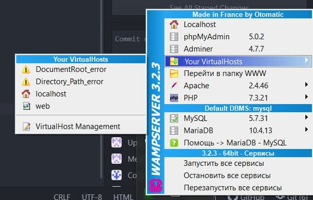
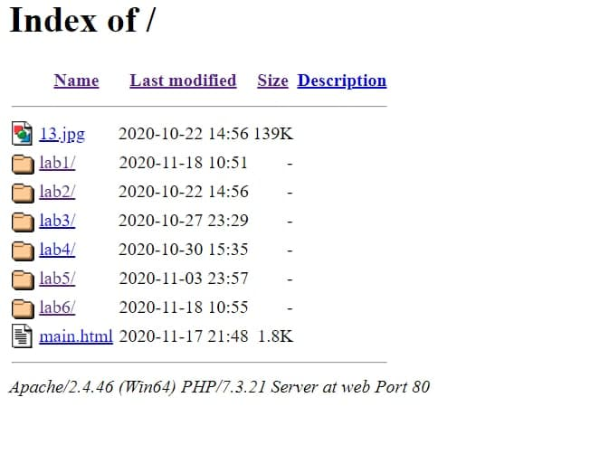
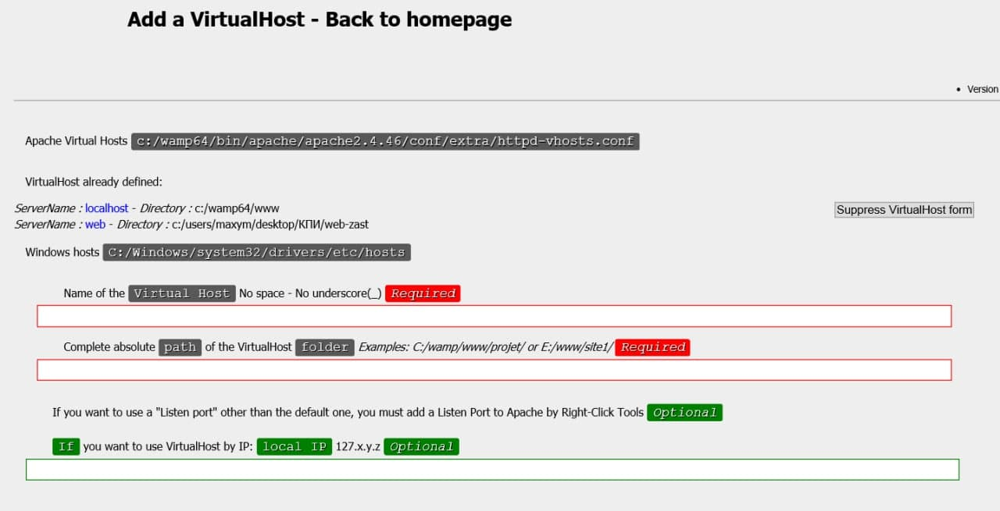
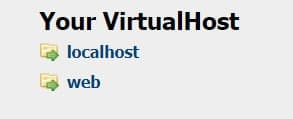

Процес установки та налаштування WAMP серверу
Після скачування серверу у нижній панелі праворуч з'явиться зелений значок запущеного сервера.

У браузері переходимо за посиланням http://localhost/ для перевірки.

Після, переходимо у VirtualHost Menagement та вказуємо назву нашого серверу, далі вказуємо повний шлях до проекту

Після всіх етапів у localhost створюється ссилка на наш проект
